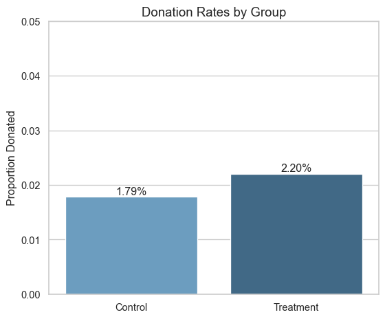
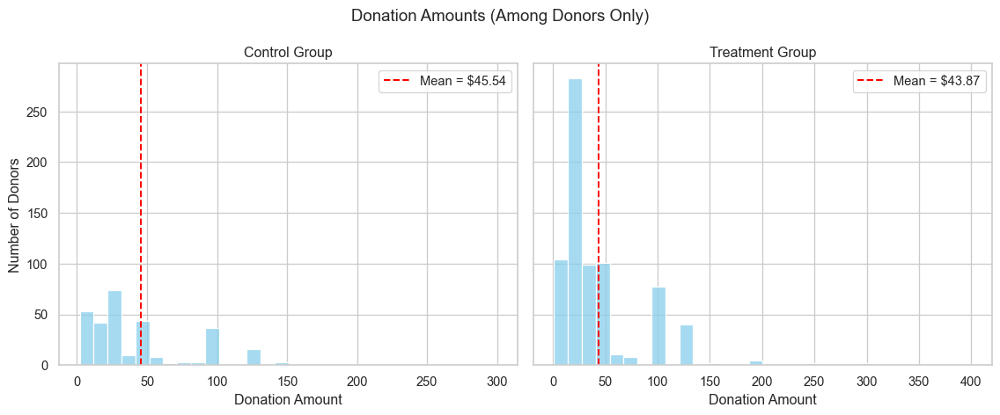
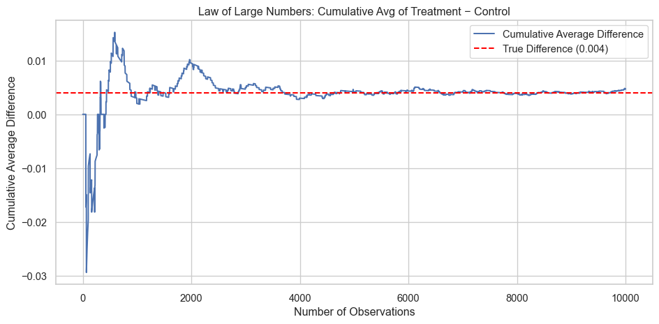
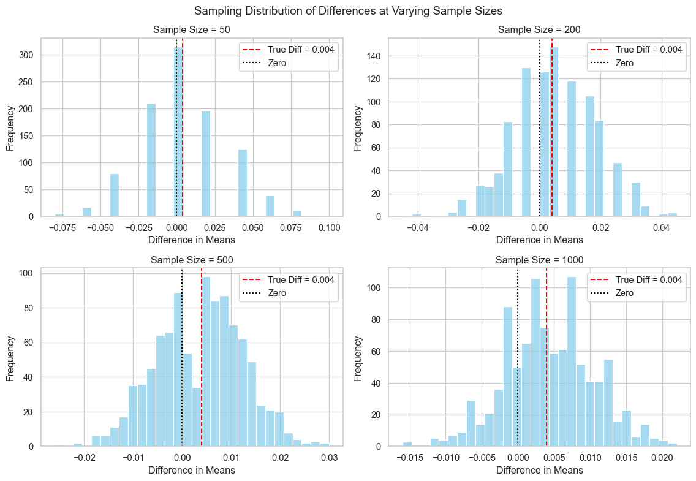

Dean Karlan at Yale and John List at the University of Chicago conducted a field experiment to test the effectiveness of different fundraising letters. They sent out 50,000 fundraising letters to potential donors, randomly assigning each letter to one of three treatments: a standard letter, a matching grant letter, or a challenge grant letter. They published the results of this experiment in the American Economic Review in 2007. The article and supporting data are available from the AEA website and from Innovations for Poverty Action as part of Harvard’s Dataverse.
The matching grant letters varied along multiple dimensions, including the size of the match ($1:$1, $2:$1, or $3:$1), the maximum amount of the matching gift, and the suggested donation amount. These variations allowed the researchers to isolate the effects of perceived price changes and test whether more generous matches led to higher response rates or larger donation amounts. By embedding this experiment in a real fundraising campaign for a politically active nonprofit, the authors were able to gather behavioral data with high external validity.
This project seeks to replicate their results.
Data
Description
import pandas as pdimport numpy as npimport statsmodels.formula.api as smfimport statsmodels.api as smfrom scipy import statsimport seaborn as snsimport matplotlib.pyplot as pltimport warningswarnings.filterwarnings("ignore") # <-- just to make outputs look clean!df = pd.read_stata("karlan_list_2007.dta")df.head()
treatment
control
ratio
ratio2
ratio3
size
size25
size50
size100
sizeno
...
redcty
bluecty
pwhite
pblack
page18_39
ave_hh_sz
median_hhincome
powner
psch_atlstba
pop_propurban
0
0
1
Control
0
0
Control
0
0
0
0
...
0.0
1.0
0.446493
0.527769
0.317591
2.10
28517.0
0.499807
0.324528
1.0
1
0
1
Control
0
0
Control
0
0
0
0
...
1.0
0.0
NaN
NaN
NaN
NaN
NaN
NaN
NaN
NaN
2
1
0
1
0
0
$100,000
0
0
1
0
...
0.0
1.0
0.935706
0.011948
0.276128
2.48
51175.0
0.721941
0.192668
1.0
3
1
0
1
0
0
Unstated
0
0
0
1
...
1.0
0.0
0.888331
0.010760
0.279412
2.65
79269.0
0.920431
0.412142
1.0
4
1
0
1
0
0
$50,000
0
1
0
0
...
0.0
1.0
0.759014
0.127421
0.442389
1.85
40908.0
0.416072
0.439965
1.0
5 rows × 51 columns
Variable Definitions
Variable
Description
treatment
Treatment
control
Control
ratio
Match ratio
ratio2
2:1 match ratio
ratio3
3:1 match ratio
size
Match threshold
size25
$25,000 match threshold
size50
$50,000 match threshold
size100
$100,000 match threshold
sizeno
Unstated match threshold
ask
Suggested donation amount
askd1
Suggested donation was highest previous contribution
askd2
Suggested donation was 1.25 x highest previous contribution
askd3
Suggested donation was 1.50 x highest previous contribution
ask1
Highest previous contribution (for suggestion)
ask2
1.25 x highest previous contribution (for suggestion)
ask3
1.50 x highest previous contribution (for suggestion)
amount
Dollars given
gave
Gave anything
amountchange
Change in amount given
hpa
Highest previous contribution
ltmedmra
Small prior donor: last gift was less than median $35
freq
Number of prior donations
years
Number of years since initial donation
year5
At least 5 years since initial donation
mrm2
Number of months since last donation
dormant
Already donated in 2005
female
Female
couple
Couple
state50one
State tag: 1 for one observation of each of 50 states; 0 otherwise
nonlit
Nonlitigation
cases
Court cases from state in 2004-5 in which organization was involved
statecnt
Percent of sample from state
stateresponse
Proportion of sample from the state who gave
stateresponset
Proportion of treated sample from the state who gave
stateresponsec
Proportion of control sample from the state who gave
stateresponsetminc
stateresponset - stateresponsec
perbush
State vote share for Bush
close25
State vote share for Bush between 47.5% and 52.5%
red0
Red state
blue0
Blue state
redcty
Red county
bluecty
Blue county
pwhite
Proportion white within zip code
pblack
Proportion black within zip code
page18_39
Proportion age 18-39 within zip code
ave_hh_sz
Average household size within zip code
median_hhincome
Median household income within zip code
powner
Proportion house owner within zip code
psch_atlstba
Proportion who finished college within zip code
pop_propurban
Proportion of population urban within zip code
Balance Test
As an ad hoc test of the randomization mechanism, I provide a series of tests that compare aspects of the treatment and control groups to assess whether they are statistically significantly different from one another.
# Variables to test onbalance_vars = ['mrm2', 'hpa', 'freq']for var in balance_vars:# Drop missing values group_A = df[df['treatment'] ==1][var].dropna() group_B = df[df['treatment'] ==0][var].dropna()# Compute means, stds, Ns for formula X_A, X_B = group_A.mean(), group_B.mean() S_A, S_B = group_A.std(ddof=1), group_B.std(ddof=1) N_A, N_B =len(group_A), len(group_B)# t-test using formula t_stat = (X_A - X_B) / np.sqrt((S_A**2/ N_A) + (S_B**2/ N_B))# Run OLS regression model = smf.ols(f"{var} ~ treatment", data=df).fit() coef = model.params['treatment'] pval = model.pvalues['treatment']# Outputprint("\n"+"="*65)print(f"Balance test for: `{var}`")print(f"\nMean (Treatment): {X_A:.3f}, Mean (Control): {X_B:.3f}")print(f"t = {t_stat:.3f}")ifabs(t_stat) >1.96:print("The absolute t-statistic exceeds 1.96, indicating a statistically significant difference between treatment and control groups at the 5% level.")else:print("The absolute t-statistic is less than 1.96, suggesting no statistically significant difference between groups — balance is likely achieved.")print(f"\nRegression coefficient (treatment): {coef:.4f}, p-value: {pval:.3f}")if pval <0.05:print(f"The p-value is less than 0.05 — this suggests imbalance for `{var}`.")else:print(f"The p-value is greater than 0.05 — no evidence of imbalance for `{var}`.")
=================================================================
Balance test for: `mrm2`
Mean (Treatment): 13.012, Mean (Control): 12.998
t = 0.120
The absolute t-statistic is less than 1.96, suggesting no statistically significant difference between groups — balance is likely achieved.
Regression coefficient (treatment): 0.0137, p-value: 0.905
The p-value is greater than 0.05 — no evidence of imbalance for `mrm2`.
=================================================================
Balance test for: `hpa`
Mean (Treatment): 59.597, Mean (Control): 58.960
t = 0.970
The absolute t-statistic is less than 1.96, suggesting no statistically significant difference between groups — balance is likely achieved.
Regression coefficient (treatment): 0.6371, p-value: 0.345
The p-value is greater than 0.05 — no evidence of imbalance for `hpa`.
=================================================================
Balance test for: `freq`
Mean (Treatment): 8.035, Mean (Control): 8.047
t = -0.111
The absolute t-statistic is less than 1.96, suggesting no statistically significant difference between groups — balance is likely achieved.
Regression coefficient (treatment): -0.0120, p-value: 0.912
The p-value is greater than 0.05 — no evidence of imbalance for `freq`.
OLS Tables
balance_vars = ['mrm2', 'hpa', 'freq']for var in balance_vars:print(f"### Full OLS Summary for `{var}`")print(model.summary())print(":::\n")
First, I analyze whether matched donations lead to an increased response rate of making a donation.
# Prepare the datadonation_rate = df.groupby('treatment')['gave'].mean().reset_index()donation_rate['group'] = donation_rate['treatment'].map({0: 'Control', 1: 'Treatment'})# Plotsns.set(style="whitegrid")plt.figure(figsize=(6, 5))ax = sns.barplot(x='group', y='gave', data=donation_rate, palette='Blues_d')# Add labels on barsfor index, row in donation_rate.iterrows(): ax.text(index, row['gave'] +0.00001, f"{row['gave']:.2%}", ha='center', va='bottom', fontsize=12)# Axis and titleax.set_ylabel("Proportion Donated", fontsize=12)ax.set_xlabel("")ax.set_title("Donation Rates by Group", fontsize=14)ax.set_ylim(0, 0.05)plt.tight_layout()plt.show()

# Subset data for Regression and t-testsubset = df[(df['control'] ==1) | (df['treatment'] ==1)].copy()subset['group'] = df['treatment']# t-testcontrol_group = subset[subset['group'] ==0]['gave']treat_group = subset[subset['group'] ==1]['gave']# Use stats library instead of manual formulat_stat, p_val = stats.ttest_ind(treat_group, control_group, equal_var=False)print("\n=== T-Test: Treatment vs Control ===")print(f"Control response rate: {control_group.mean():.3f}")print(f"Treatment response rate: {treat_group.mean():.3f}")print(f"t-statistic: {t_stat:.3f}")print(f"p-value: {p_val:.4f}")# Regressionmodel = smf.ols("gave ~ group", data=subset).fit()# Print resultsprint("\n=== OLS Regression Summary ===")print(model.summary())
=== T-Test: Treatment vs Control ===
Control response rate: 0.018
Treatment response rate: 0.022
t-statistic: 3.209
p-value: 0.0013
=== OLS Regression Summary ===
OLS Regression Results
==============================================================================
Dep. Variable: gave R-squared: 0.000
Model: OLS Adj. R-squared: 0.000
Method: Least Squares F-statistic: 9.618
Date: Wed, 23 Apr 2025 Prob (F-statistic): 0.00193
Time: 20:55:08 Log-Likelihood: 26630.
No. Observations: 50083 AIC: -5.326e+04
Df Residuals: 50081 BIC: -5.324e+04
Df Model: 1
Covariance Type: nonrobust
==============================================================================
coef std err t P>|t| [0.025 0.975]
------------------------------------------------------------------------------
Intercept 0.0179 0.001 16.225 0.000 0.016 0.020
group 0.0042 0.001 3.101 0.002 0.002 0.007
==============================================================================
Omnibus: 59814.280 Durbin-Watson: 2.005
Prob(Omnibus): 0.000 Jarque-Bera (JB): 4317152.727
Skew: 6.740 Prob(JB): 0.00
Kurtosis: 46.440 Cond. No. 3.23
==============================================================================
Notes:
[1] Standard Errors assume that the covariance matrix of the errors is correctly specified.
In this regression, I found that people in the treatment group were significantly more likely to donate compared to those in the control group. The increase in donation likelihood is small, but the result is statistically significant, meaning it is unlikely to be due to random chance. This is shown by the p-value of 0.002 for the treatment variable, which is well below the common 0.05 threshold for significance. The coefficient of 0.0042 means that the treatment increased the probability of donating by about 0.42 percentage points. Even though most people did not donate overall, being told their gift would be matched made a small but noticeable difference.
# Probit Modelprobit_model = smf.probit("gave ~ treatment", data=df).fit()print(probit_model.summary())print("\n")# Marginal effect of Probit Model (to show 0.004!)mfx = probit_model.get_margeff(at='mean')print(mfx.summary())
I also ran a Probit regression to estimate the effect of being in the treatment group on the likelihood of donating. The marginal effect of treatment is about 0.0043, meaning that receiving the matching message increased the probability of donating by 0.43 percentage points. This effect is statistically significant with a p-value of 0.002, suggesting the treatment had a real impact on behavior, even if the absolute increase was small. This result further solidifies the results found from the T-Test and the logistic regression.
Differences between Match Rates
Next, I assess the effectiveness of different sizes of matched donations on the response rate. In their paper, Karlan and List say “Yet, while the match treatments relative to a control group increase the probability of donating, larger match ratios—$3:$1 and $2:$1—relative to smaller match ratios ($1:$1) had no additional impact.” This was a surprising conclusion to me, so I tested the differences between match rates below.
# Filter only those with a ratio valueratio_df = df[df['ratio'].notna()]# Create groups for each ratio levelgroup_1_1 = ratio_df[ratio_df['ratio'] ==1]['gave']group_2_1 = ratio_df[ratio_df['ratio'] ==2]['gave']group_3_1 = ratio_df[ratio_df['ratio'] ==3]['gave']# Run t-tests using statst_21_vs_11, p_21_vs_11 = stats.ttest_ind(group_2_1, group_1_1, equal_var=False)t_31_vs_11, p_31_vs_11 = stats.ttest_ind(group_3_1, group_1_1, equal_var=False)t_31_vs_21, p_31_vs_21 = stats.ttest_ind(group_3_1, group_2_1, equal_var=False)# Print resultsprint("\n=== T-Tests: Match Ratio Comparisons ===")print(f"2:1 vs 1:1 — t = {t_21_vs_11:.3f}, p = {p_21_vs_11:.4f}")print(f"3:1 vs 1:1 — t = {t_31_vs_11:.3f}, p = {p_31_vs_11:.4f}")print(f"3:1 vs 2:1 — t = {t_31_vs_21:.3f}, p = {p_31_vs_21:.4f}")
=== T-Tests: Match Ratio Comparisons ===
2:1 vs 1:1 — t = 0.965, p = 0.3345
3:1 vs 1:1 — t = 1.015, p = 0.3101
3:1 vs 2:1 — t = 0.050, p = 0.9600
The t-tests showed no statistically significant differences between the groups (all p-values > 0.05), indicating that larger match ratios did not significantly increase the probability of donating. These results support the authors’ claim that, although announcing a match increases giving, increasing the match size (from 1:1 to 2:1 or 3:1) has no further effect. Interesting!
# Make ratio1df['ratio1'] = (df['ratio'] ==1).astype(int)# Filter to just treatment group with non-null ratio valuessubset = df[df['ratio'].notna()].copy()# Run the regression with 1:1 as the baselinemodel = smf.ols("gave ~ ratio1 + ratio2 + ratio3 - 1", data=subset).fit()print(model.summary())
OLS Regression Results
=======================================================================================
Dep. Variable: gave R-squared (uncentered): 0.016
Model: OLS Adj. R-squared (uncentered): 0.016
Method: Least Squares F-statistic: 266.5
Date: Wed, 23 Apr 2025 Prob (F-statistic): 1.28e-171
Time: 20:55:08 Log-Likelihood: 26499.
No. Observations: 50083 AIC: -5.299e+04
Df Residuals: 50080 BIC: -5.297e+04
Df Model: 3
Covariance Type: nonrobust
==============================================================================
coef std err t P>|t| [0.025 0.975]
------------------------------------------------------------------------------
ratio1 0.0207 0.001 15.357 0.000 0.018 0.023
ratio2 0.0226 0.001 16.753 0.000 0.020 0.025
ratio3 0.0227 0.001 16.823 0.000 0.020 0.025
==============================================================================
Omnibus: 59526.384 Durbin-Watson: 2.001
Prob(Omnibus): 0.000 Jarque-Bera (JB): 4230365.728
Skew: 6.688 Prob(JB): 0.00
Kurtosis: 45.992 Cond. No. 1.00
==============================================================================
Notes:
[1] R² is computed without centering (uncentered) since the model does not contain a constant.
[2] Standard Errors assume that the covariance matrix of the errors is correctly specified.
To further validate this claim, I created a new variable (ratio1), representing a 1:1 match. I then used it along with ratio2 and ratio3 in a regression, taking out the intercept to avoid multicollinearity. The estimated donation rates were 2.07% for the 1:1 match group, 2.26% for the 2:1 group, and 2.27% for the 3:1 group. While the differences are statistically significant due to the large sample size, they are extremely small in magnitude. This supports the authors’ finding that increasing the match ratio beyond 1:1 does not meaningfully increase donation likelihood.
Size of Charitable Contribution
In this subsection, I analyze the effect of the size of matched donation on the size of the charitable contribution.
# Compare the amount donated for EVERYONEtreat_group = df[df['treatment'] ==1]['amount'].dropna()control_group = df[df['control'] ==1]['amount'].dropna()# Run t-tests using statst_stat, p_val = stats.ttest_ind(treat_group, control_group, equal_var=False)# Print resultsprint("=== T-Test: Amount Donated ~ Treatment ===")print(f"Mean (Control): {control_group.mean():.3f}")print(f"Mean (Treatment): {treat_group.mean():.3f}")print(f"t-statistic: {t_stat:.3f}")print(f"p-value: {p_val:.4f}")
=== T-Test: Amount Donated ~ Treatment ===
Mean (Control): 0.813
Mean (Treatment): 0.967
t-statistic: 1.918
p-value: 0.0551
I ran both a t-test to compare the average donation amount between the treatment and control groups. The treatment group gave slightly more on average, and the difference was statistically significant. However, the increase was modest in size. This tells us that while being in the treatment group (with a matching grant) not only increases the likelihood of donating, it also slightly increases how much people give — suggesting that matching grants may influence both whether and how much people donate.
# Now compare amounts donated only considering people who donateddonated_df = df[(df['gave'] ==1) & ((df['treatment'] ==1) | (df['control'] ==1))].copy()donated_df['group'] = donated_df['treatment'] # 1 if treatment, 0 if control# Find donation amountstreat_amt = donated_df[donated_df['group'] ==1]['amount']control_amt = donated_df[donated_df['group'] ==0]['amount']# Run t-test using statst_stat, p_val = stats.ttest_ind(treat_amt, control_amt, equal_var=False)# Print resultsprint("=== T-Test: Amount (Conditional on Giving) ===")print(f"Mean (Treatment): {treat_amt.mean():.2f}")print(f"Mean (Control): {control_amt.mean():.2f}")print(f"t-statistic: {t_stat:.3f}")print(f"p-value: {p_val:.4f}")
=== T-Test: Amount (Conditional on Giving) ===
Mean (Treatment): 43.87
Mean (Control): 45.54
t-statistic: -0.585
p-value: 0.5590
I examined whether people in the treatment group donated more money than those in the control group, conditional on having donated. The average donation amount was slightly lower in the treatment group ($43.87) than in the control group ($45.54), but this difference was not statistically significant (p = 0.559). This suggests that while the treatment increased the likelihood of giving, it did not affect how much people gave once they decided to donate. Since this analysis is limited to those who self-selected into giving, the treatment coefficient does not have a clear causal interpretation — the act of giving may already differ across groups due to unobserved selection.
# Filter for people who donateddonors = df[(df['gave'] ==1) & ((df['control'] ==1) | (df['treatment'] ==1))].copy()donors['group'] = donors['treatment'].map({0: 'Control', 1: 'Treatment'})# Create plotsns.set(style="whitegrid")# Create subplotsfig, axes = plt.subplots(1, 2, figsize=(12, 5), sharey=True)# Plot histogram for each groupfor i, grp inenumerate(['Control', 'Treatment']): data = donors[donors['group'] == grp]['amount'] mean_val = data.mean() sns.histplot(data, bins=30, ax=axes[i], kde=False, color='skyblue') axes[i].axvline(mean_val, color='red', linestyle='--', label=f'Mean = ${mean_val:.2f}') axes[i].set_title(f"{grp} Group") axes[i].set_xlabel("Donation Amount") axes[i].set_ylabel("Number of Donors") axes[i].legend()plt.suptitle("Donation Amounts (Among Donors Only)", fontsize=14)plt.tight_layout()plt.show()

Simulation Experiment
As a reminder of how the t-statistic “works,” in this section I use simulation to demonstrate the Law of Large Numbers and the Central Limit Theorem.
Suppose the true distribution of respondents who do not get a charitable donation match is Bernoulli with probability p=0.018 that a donation is made.
Further suppose that the true distribution of respondents who do get a charitable donation match of any size is Bernoulli with probability p=0.022 that a donation is made.
Law of Large Numbers
# Set true valuesp_control =0.018p_treatment =0.022# Simulate datanp.random.seed(1234)control = np.random.binomial(1, p_control, size=100_000)treatment = np.random.binomial(1, p_treatment, size=10_000)# Compute the difference in each simulationdifferences = treatment - control[:10_000]# Compute the cumulative average of differencescum_avg = np.cumsum(differences) / np.arange(1, len(differences) +1)# Plotplt.figure(figsize=(10, 5))plt.plot(cum_avg, label='Cumulative Average Difference')plt.axhline(0.004, color='red', linestyle='--', label='True Difference (0.004)')plt.xlabel('Number of Observations')plt.ylabel('Cumulative Average Difference')plt.title('Law of Large Numbers: Cumulative Avg of Treatment − Control')plt.legend()plt.grid(True)plt.tight_layout()plt.show()

The plot shows the cumulative average difference in donation outcomes between a simulated treatment group (with p = 0.022) and control group (p = 0.018), across 10,000 samples. Even though the average is very volatile at first, as the number of observations increases, the cumulative average stabilizes and converges toward the true difference of 0.004. This is the Law of Large Numbers! With enough observations, the sample average converges to the expected value and shows the true effect of the treatment.
Central Limit Theorem
to do: Make 4 histograms like those on slide 44 from our first class at sample sizes 50, 200, 500, and 1000 and explain these plots to the reader. To do this for a sample size of e.g. 50, take 50 draws from each of the control and treatment distributions, and calculate the average difference between those draws. Then repeat that process 999 more times so that you have 1000 averages. Plot the histogram of those averages. Comment on whether zero is in the “middle” of the distribution or whether it’s in the “tail.”
# Set true valuesp_control =0.018p_treatment =0.022n_simulations =1000sample_sizes = [50, 200, 500, 1000]np.random.seed(1234)# Set up the plotsfig, axes = plt.subplots(2, 2, figsize=(12, 8))axes = axes.flatten()# Run simulation for each sample sizefor i, n inenumerate(sample_sizes): diffs = []for _ inrange(n_simulations): control = np.random.binomial(1, p_control, size=n) treatment = np.random.binomial(1, p_treatment, size=n) diffs.append(treatment.mean() - control.mean())# Plot histogram of average differences sns.histplot(diffs, bins=30, kde=False, ax=axes[i], color='skyblue') axes[i].axvline(0.004, color='red', linestyle='--', label='True Diff = 0.004') axes[i].axvline(0, color='black', linestyle=':', label='Zero') axes[i].set_title(f"Sample Size = {n}") axes[i].set_xlabel("Difference in Means") axes[i].set_ylabel("Frequency") axes[i].legend()plt.tight_layout()plt.suptitle("Sampling Distribution of Differences at Varying Sample Sizes", fontsize=14, y=1.02)plt.show()

These histograms show the sampling distributions of the difference in donation rates between treatment and control groups at different sample sizes (50, 200, 500, 1000). As the sample size increases, the distribution becomes narrower (less variation) and increasingly centers around the true treatment effect of 0.004. At small sample sizes, the distribution is wide and zero is often near the center, meaning we might not detect a treatment effect. But at larger sample sizes, the distribution shifts away from zero, and it becomes clear that the treatment increases donation probability. This highlights how statistical significance depends not just on effect size, but also on sample size.
Conclusion
This analysis explored how subtle changes in charitable fundraising messages can influence donor behavior. Across a range of statistical tests and simulations, the results consistently showed that while offering a matching donation increases the likelihood that someone donates, increasing the match ratio beyond a basic 1:1 offer provides little additional benefit. The treatment’s effect was primarily observed in encouraging people to give, rather than changing how much they donated. These findings highlight the importance of behavioral nudges in shaping economic decisions, the role of sample size in detecting effects, and the value of empirical evidence in challenging fundraising assumptions. Thank you for stopping by!